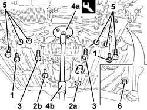
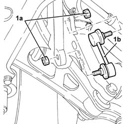
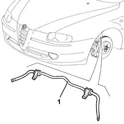
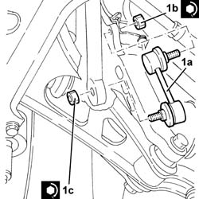
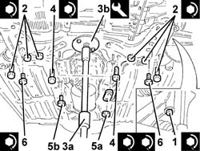

4410c10 FRONT SUSPENSION STABILIZER BAR - R+R - CHECK WHEEL GEOMETRY SEPARATELY
- Path
- Procedures > 44 SUSPENSION AND WHEELS > 4410 FRONT SUSPENSION > 4410C STABILIZER BAR AND ANCHORAGE STRUTS > 4410c10 FRONT SUSPENSION STABILIZER BAR - R+R - CHECK WHEEL GEOMETRY SEPARATELY
- Kind
- repair procedure (removal / refitting; the operation number is the code)
- Applies to
- all engines; all production periods
- Interactive page
- https://sloeber94.github.io/elrnDB-aGt/en/#/125001441
Applies to: all engines; all production periods
 Removing
Removing
 Refitting
RefittingPosition the vehicle on a lift.
Make sure that the ignition key is in the OFF position, then disconnect the battery terminal (-).
Description | Connector | |
|---|---|---|
- | Battery | See A1B BATTERY ( BATTERY NEGATIVE ) |
Proceed with the removal
Op. 4450B12 FRONT OR REAR WHEELS (TWO) - R+R.
Proceed with the removal
Applies to: all engines; all production periods
Proceed with the removal
Op. 1008A44 REAR RIGID MOUNT - R R.
For the 3.2 V6 version only, undo the bolts and remove the underbody reinforcements.
1. Undo the bolts securing the anti-roll bar to the front suspension crossmember.
2. Undo the nuts (2a) and the bolts (2b) for the handbrake and gear control levers mounting.
3. Undo the bolts fixing the power assisted steering box to the front suspension crossmember.
4. Fit the tool (4a) equipped with the hydraulic jack (4b) to support the front suspension crossmember.
Description | Code | |
|---|---|---|
4a | Flange | 1.860.978.000 |
5. Undo the rear bolts fixing the front suspension crossmember to the bodyshell.
6. Undo the side bolts fixing the front suspension crossmember to the bodyshell.
Lower the hydraulic jack with the front suspension crossmember as necessary.

Applies to: all engines; all production periods
1. Undo the nuts (1a) and remove the front suspension anti-roll bar (1b) joints.

Applies to: all engines; all production periods
Lower the front suspension crossmember further using the hydraulic jack leaving it secured to the lower track control arms only.
1. Remove the front suspension anti-roll bar.

Applies to: all engines; all production periods
Refitting
RemovingPlace the front suspension anti-roll bar in position.
Raise the front suspension crossmember as necessary using the hydraulic jack.
1. Place the front suspension anti-roll bar joints (1a) in their housings and secure them tightening the nuts (1b) and (1c) to the recommended torque.
Fastening | Component | Ø | Value (daNm) | |
|---|---|---|---|---|
1b | Nut | FRONT ANTI-ROLL BAR JOINTS | M10 | (Front shock absorber fork side) 4.1 - 5.0 |
Fastening | Component | Ø | Value (daNm) | |
|---|---|---|---|---|
1c | Nut | FRONT ANTI-ROLL BAR JOINTS | M10 | (Anti-roll bar side) 4.5 - 5.5 |

Applies to: all engines; all production periods
Raise the front suspension crossmember completely using the hydraulic jack.
1. Tighten the side bolts fixing the front suspension crossmember to the bodyshell to the recommended torque.
Fastening | Component | Ø | Value (daNm) | |
|---|---|---|---|---|
1 | Side bolt | FRONT SUSPENSION CROSSMEMBER | M12 | (Bodyshell side) 10.8 - 13.2 |
2. Tighten the rear bolts fixing the front suspension crossmember to the bodyshell to the recommended torque.
Fastening | Component | Ø | Value (daNm) | |
|---|---|---|---|---|
2 | Rear bolt | FRONT SUSPENSION CROSSMEMBER | M12 | (Bodyshell side) 10.8 - 13.2 |
Fastening | Component | Ø | Value (daNm) | |
|---|---|---|---|---|
2 | Rear bolt | FRONT SUSPENSION CROSSMEMBER | M10 | (Bodyshell side) 8.1 - 9.9 |
3. Remove the hydraulic jack (3a) fitted with the front suspension crossmember support tool (3b).
Description | Code | |
|---|---|---|
3b | Flange | 1.860.978.000 |
4. Tighten the bolts fixing the power assisted steering box to the front suspension crossmember to the recommended torque.
Fastening | Component | Ø | Value (daNm) | |
|---|---|---|---|---|
4 | Bolt | POWER STEERING BOX | M14 | (Front suspension crossmember side) 11.7 - 14.3 |
5. Tighten the nuts (5a) and the bolts (5b) for the handbrake and gear control levers mounting.
6. Tighten the bolts fixing the anti-roll bar to the front suspension crossmember to the recommended torque.
Fastening | Component | Ø | Value (daNm) | |
|---|---|---|---|---|
6 | Bolt | FRONT ANTI-ROLL BAR | M8 | (Front suspension crossmember side) 3.6 - 4.4 |
For the 3.2 V6 version only, place the underbody reinforcements in position and secure them using the bolts.

Applies to: all engines; all production periods
Proceed with the refitting
Applies to: all engines; all production periods
Proceed with the refitting
Op. 7055B54 UNDER-ENGINE GUARD - R R.
Proceed with the refitting
Op. 4450B12 FRONT OR REAR WHEELS (TWO) - R+R.
Connect the negative battery terminal (-).
Remove the vehicle from the lift.
It is advisable to check the wheel geometry
Applies to: engines: 1.8 T.SPARK, 2.0 JTS; all production periods
Proceed with the removal
Op. 1072C44 EXHAUST MANIFOLD HEAT SHIELD ON BULKHEAD - R+R.
Proceed with the removal
Applies to: engines: 1.9 JTD 16V; all production periods
Proceed with the removal
Op. 1076B70 EXHAUST PIPE BETWEEN PRE-CATALYTIC CONVERTER AND CATALYTIC CONVERTER - R R.
Applies to: engines: 3.2 V6; all production periods
Proceed with the removal
Op. 1076B82 LEFT EXHASUST PIPE BETWEEN CATALYTIC PRECONVERTER AND CONVERTER R R.
Proceed with the removal
Op. 1076B84 RIGHT EXHAUST PIPE BETWEEN CARALYTIC PRECONVERTER AND CONVERTER R R.
Applies to: engines: 3.2 V6; all production periods
Proceed with the refitting
Op. 1076B84 RIGHT EXHAUST PIPE BETWEEN CARALYTIC PRECONVERTER AND CONVERTER R R.
Proceed with the refitting
Op. 1076B82 LEFT EXHASUST PIPE BETWEEN CATALYTIC PRECONVERTER AND CONVERTER R R.
Applies to: engines: 1.9 JTD 16V; all production periods
Proceed with the refitting
Op. 1076B70 EXHAUST PIPE BETWEEN PRE-CATALYTIC CONVERTER AND CATALYTIC CONVERTER - R R.
Applies to: engines: 1.8 T.SPARK, 2.0 JTS; all production periods
Proceed with the refitting
Op. 1080B40 CATALYTIC PRE-CONVERTER - R R.
Proceed with the refitting
Topics linked from this page (9)
- 1008A44 REAR RIGID MOUNT - R R
- 1072C44 EXHAUST MANIFOLD HEAT SHIELD ON BULKHEAD - R+R
- 1076B70 EXHAUST PIPE BETWEEN PRE-CATALYTIC CONVERTER AND CATALYTIC CONVERTER - R R
- 1076B82 LEFT EXHASUST PIPE BETWEEN CATALYTIC PRECONVERTER AND CONVERTER R R
- 1076B84 RIGHT EXHAUST PIPE BETWEEN CARALYTIC PRECONVERTER AND CONVERTER R R
- 1080B40 CATALYTIC PRE-CONVERTER - R R
- 4450A10 FRONT WHEEL GEOMETRY - CHECK USING OPTICAL EQUIPMENT - INCLUDES FRONT WHEEL TOW-IN ADJUSTMENT IF NECESSARY
- 4450B12 FRONT OR REAR WHEELS (TWO) - R+R
- 7055B54 UNDER-ENGINE GUARD - R R